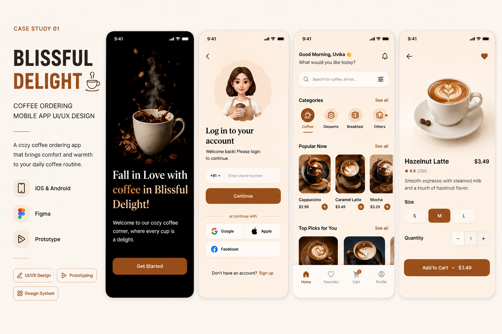
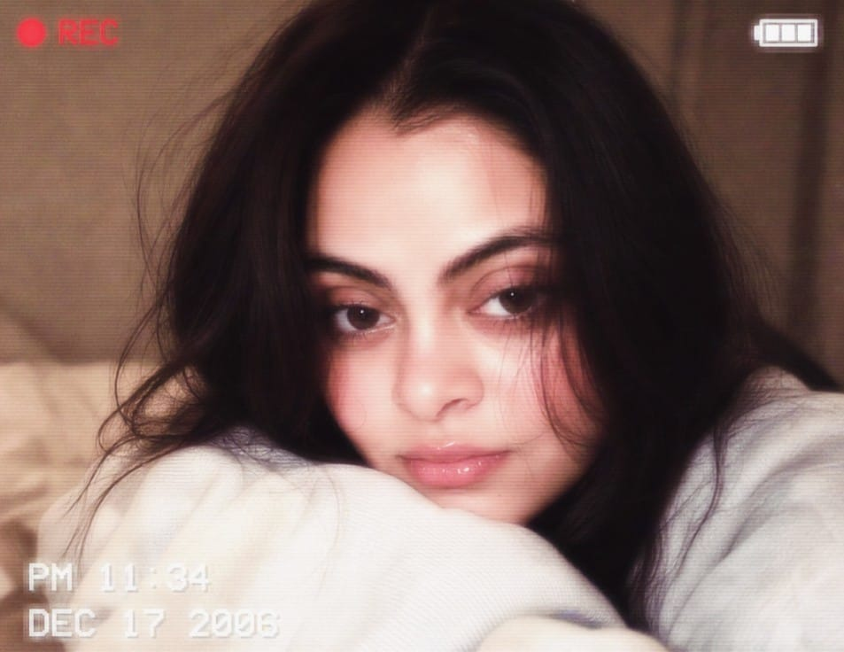
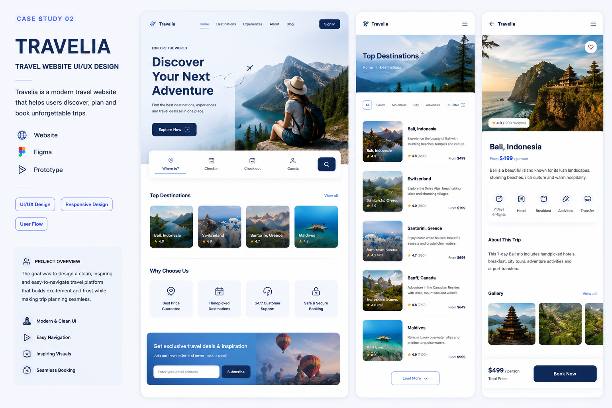
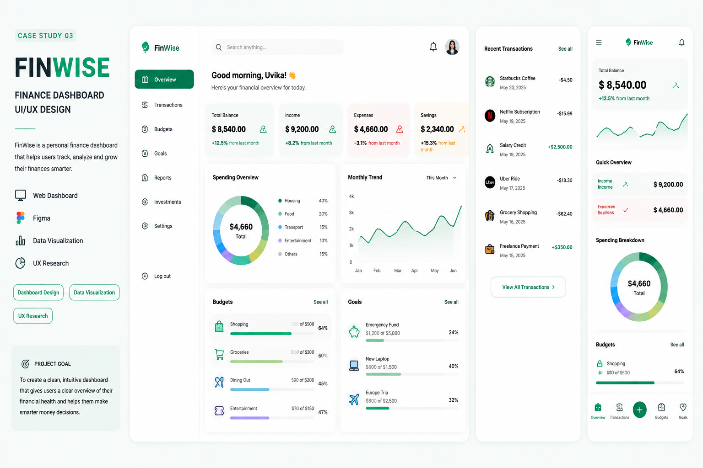

01MOBILE UI/UXFigmaUI/UXPrototypeDesign System
WEB DESIGNER × UI/UX DESIGNER
I'm Uvika — a BCA graduate creating bold, clean and useful digital experiences. I combine UI/UX thinking with HTML & CSS to turn ideas into interfaces people remember.

SELECTED WORK / 2026
I care about the details people notice — and the ones they don't, because they simply make the experience feel right.

01MOBILE UI/UX
02WEB UI/UX
03DASHBOARD UITHE SWEET SPOT
Not just pretty screens. Not just code. I like the space in between — where a good idea becomes an experience that actually works.
MY TOOLKIT
Layouts, typography, spacing, visual hierarchy and responsive-first thinking.
↗Semantic structure, modern styling and responsive web presentation.
</>Interface design, wireframes, components and interactive prototype workflows.
◆User flows, usability, information hierarchy and practical design decisions.
✦A LITTLE ABOUT ME
I'm a BCA graduate who enjoys turning ideas into clean, useful and visually engaging digital experiences.
My sweet spot is where design meets the web — creating interfaces in Figma, thinking through the user journey, and understanding how the final experience translates into HTML and CSS.
YOUR NEXT DESIGNER?
I'm open to full-time Web Designer, UI Designer, UI/UX Designer and related entry-level opportunities across India.
Coffee ordering mobile experience focused on warmth, discovery and a streamlined purchase flow.
Responsive travel website concept focused on destination discovery, trip information and confident booking.
Finance dashboard concept designed to make financial health, transactions, budgets and goals easier to scan.